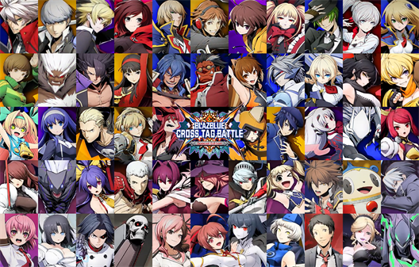

BlazBlue: Cross Tag Battleis a 2D crossover fighting gamedeveloped and published by Arc System Works, released on PlayStation 4, Nintendo Switch and Microsoft Windows. The game features each characters from different franchises, including BlazBlue, Persona 4 Arena, Under Night In-Birth and RWBY, by Arc System Works, Atlus, French Bread and Rooster Teeth respectively. After the game was released, characters from Arcana Heart, Senran Kagura and Akatsuki Blitzkampf franchises, developed by Team Arcana (formerly co-owned with its parent company Examu), Marvelous and SUBTLE STYLE respectively, have been added to the game as downloadable content (DLC). An arcade version was released in 2019.

A singularity called the "Phantom Field" is mixing the reality of BlazBlue with other four universes. Members of these worlds are abruptly summoned while instructed by a "Phantom Field", the mysterious voice itself, that they must protect the "Keystone" in order to return to their homes. But as the Keystone is divided into four fragments for each group, it results in a battle to acquire them.
In the second storyline, it continues from certain BlazBlue episodes revolving around a critical situation accidentally caused by mostly Hazama, unintentionally cause the "Phantom Field" to not hold up the unexpected situation, which is why they set up a stamp collecting contest for every participants in different universes (including from three more universes) and as part of a temporary truce. They need to solve the problem and stop a dangerous outcome from ending the multiverse, by searching primary candidates.